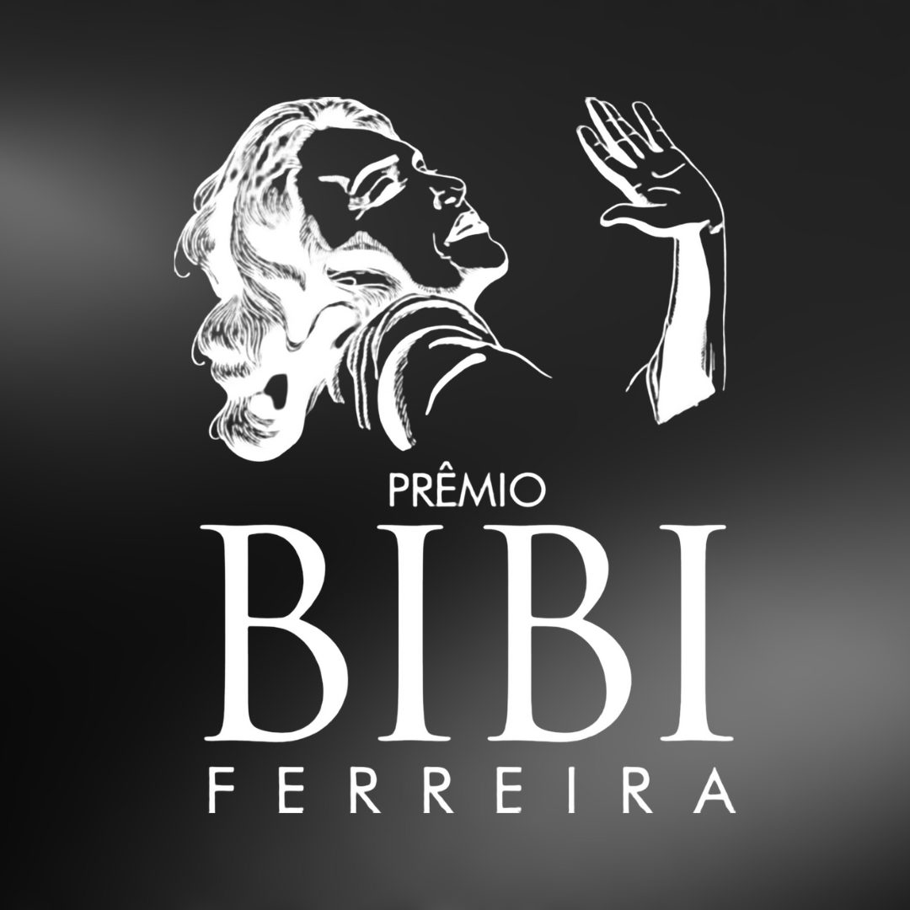

Prêmio Bibi Ferreira anuncia indicados da 10ª edição. Confira os indicados

Prêmio Bibi Ferreira anuncia indicados de 2023, veja lista completa
Uma das maiores e mais importantes premiações de teatro de São Paulo, acontece desde 2011 consagrando talentos do teatro musical e, desde 2018 contemplando também o teatro em prosa.
Em uma noite de glamour e classe, são distribuídos diversos prêmios que levam o nome de uma das maiores atrizes de musicais do Brasil. A premiação foi concebida a partir da troca de informações entre a Mercearia de Cultura e a Broadway League e American Wings, responsáveis pela realização do Prêmio Tony, e a Sociedade Teatral de Londres, responsável pelo Prêmio Olivier.
Este ano, a lista de espetáculos é maior, isso porque muitos foram autorizados pela produção do evento a concorrerem em algumas das categorias. Seja porque já estavam em cartaz como em circulação e agora fizeram temporada fixa, ou o contrário.
E os indicados ao prêmio Bibi Ferreira de 2023 são:
LISTA DE INDICADOS – TEATRO MUSICAL
MELHOR VERSÃO EM MUSICAIS
Claudio Botelho – Alguma Coisa Podre
Mariana Elisabetsky – Once, O Musical
Rafael Oliveira – Bonnie & Clyde
MELHOR DESENHO DE LUZ EM MUSICAIS
César Pivetti – O Bem Amado Musicado
Fran Barros e Tulio Pezzoni – Once, O Musical
Wagner Antônio – Museu Nacional
MELHOR DESENHO DE SOM EM MUSICAIS
Audio S.A – Marrom, O Musical
Gabriel D’Angelo – Jacksons do Pandeiro
João Henrique Baracho – Once, O Musical
MELHOR VISAGISMO EM MUSICAIS
Alisson Rodrigues – O Bem Amado Musicado
Anderson Bueno – O Pequeno Príncipe, O Musical
Feliciano San Roman – Alguma Coisa Podre
MELHOR CENÁRIO EM MUSICAIS
Cesar Costa e Zé Henrique de Paula – Once, O Musical
Duda Arruk – Alguma Coisa Podre
Rogério Falcão – O Pequeno Príncipe, O Musical
MELHOR FIGURINO EM MUSICAIS
Fábio Namatame – Alguma Coisa Podre
Theodoro Cochrane – Once, O Musical
Theodoro Cochrane – O Pequeno Príncipe, O Musical
MELHOR ARRANJO ORIGINAL EM MUSICAIS
Daniel Rocha – Ney Matogrosso, Homem com H, O Musical
Guilherme Terra – Marrom, O Musical
Jules Vandystadt – Elas Brilham – Doc Musical
MELHOR LETRA E MÚSICA EM MUSICAIS
Danilo Moura e Mau Alves – Glam, O Musical
Marco França, Zeca Baleiro e Newton Moreno – O Bem Amado Musicado
Maria Zélia Marão, Marcus Vinicius Silva, Sheila Dryzun e Thiago Gimenes – O Pequeno Príncipe, O Musical
MELHOR DRAMATURGIA ORIGINAL EM MUSICAIS
Emilio Boechat e Marilia Toledo – Ney Matogrosso, Homem com H, O Musical
Fernanda Brandalise – Clube da Esquina – Os sonhos não envelhecem
Flávio Marinho – Judy – O arco-íris é aqui
Guilherme Gila – A Igreja do Diabo – Um Musical Imoral e Hilário
Sheila Dryzun – O Pequeno Príncipe, O Musical
MELHOR COREOGRAFIA EM MUSICAIS
Alonso Barros – Alguma Coisa Podre
Barbara Guerra e Rafael Machado – Marrom, O Musical
Gabriel Malo – Once, O Musical
Kátia Barros – O Pequeno Príncipe, O Musical
Keila Bueno – Bonnie & Clyde
MELHOR DIREÇÃO MUSICAL EM MUSICAIS
Alfredo Del-Penho e Beto Lemos – Jacksons do Pandeiro
Claudio Cruz – West Side Story
Fernanda Maia – Once, O Musical
Thiago Gimenes – Alguma Coisa Podre
Thiago Rodrigues – Anastasia, O Musical
MELHOR DIREÇÃO EM MUSICAIS
Duda Maia – Jacksons do Pandeiro
Gustavo Barchilon – Alguma Coisa Podre
Miguel Falabella – Marrom, O Musical
Ricardo Grasson – O Bem Amado Musicado
Zé Henrique de Paula – Once, O Musical
REVELAÇÃO EM MUSICAIS
Anastácia Lia – Marrom, O Musical
Edyelle Brandão – A Igreja do Diabo – Um Musical Imoral e Hilário
Lucas Lima – Once, O Musical
Luís Vasconcelos – Sidney Magal: Muito Mais Que Um Amante Latino
Mattilla – Los Hermanos – Musical Pré-Fabricado
MELHOR ATOR COADJUVANTE EM MUSICAIS
André Torquato – West Side Story
Claudio Lins – Bonnie & Clyde
George Sauma – Alguma Coisa Podre
Marco França – O Bem Amado Musicado
Tiago Abravanel – Anastasia, O Musical
MELHOR ATRIZ COADJUVANTE EM MUSICAIS Letícia Soares – Marrom, O Musical Luciana Ramanzini – O Pequeno Príncipe, O Musical Carol Costa – Anastasia, O Musical Liane Maya – Além do Ar – Um Musical Inspirado em Santos Dumont Bel Lima – Alguma Coisa Podre
MELHOR ATOR EM MUSICAIS
Beto Sargentelli – Bonnie & Clyde
Beto Sargentelli – West Side Story
Marcos Veras – Alguma Coisa Podre
Renan Mattos – Ney Matogrosso, Homem com H, O Musical
Tiago Barbosa – Clube da Esquina – Os sonhos não envelhecem
MELHOR ATRIZ EM PEÇA DE TEATRO
Bruna Guerin – Once, O Musical
Eline Porto – Bonnie & Clyde
Giovanna Rangel – Anastasia, O Musical
Giulia Nadruz – West Side Story
Luciana Braga – Judy – O arco-íris é aqui
MELHOR MUSICAL OFF
A Igreja do Diabo, Um Musical Imoral e Hilário – A Casa que Fala
Glam, O Musical – Cerejeiras Produções
Tempo Certo, O Musical – Bravart Entretenimento e Iguaya Produções
MELHOR MUSICAL BRASILEIRO
Clube da Esquina – Os sonhos não envelhecem - Buenos Dias, MRG e Grupo Prisma
Jacksons do Pandeiro – Sarau Agência de Cultura e Barca dos Corações Partidos
Marrom, O Musical – Fato Produções Artísticas
Ney Matogrosso, Homem com H, O Musical – Paris Cultural
O Bem Amado Musicado – Velloni Produções
MELHOR MUSICAL
Alguma Coisa Podre – Barho Produções e Touché Entretenimento
Anastasia, O Musical – Cara Di Boi e T4F Entretenimento
Bonnie & Clyde - Del Claro Produções e H Produções Culturais
Jacksons do Pandeiro – Sarau Agência de Cultura e Barca dos Corações Partidos
Marrom, O Musical – Fato Produções Artísticas
Once, O Musical – Palco 7 Produções, Rega Início Produções e Solo Entretenimento
West Side Story – Santa Marcelina Cultura
LISTA DE INDICADOS – PROSA
MELHOR DESENHO DE LUZ EM PEÇA DE TEATRO
César Pivetti – Gaslight – Uma Relação Tóxica
Fran Barros e Tulio Pezzoni – A Herança
Paulo César Medeiros – F(r)icções
MELHOR CENÁRIO EM PEÇA DE TEATRO
Bia Junqueira – F(r)icções
Marco Lima – Gaslight – Uma Relação Tóxica
Marisa Bentivegna – Mary Stuart
MELHOR FIGURINO EM PEÇA DE TEATRO
Karen Brusttolin – Gaslight – Uma Relação Tóxica
Karen Brusttolin – Dom Quixote
Tiago Ribeiro – Três Mulheres Altas
MELHOR DIREÇÃO EM PEÇA DE TEATRO
Fernando Philbert – Três Mulheres Altas
Jô Soares (In memorian) e Mauricio Guilherme – Gaslight - Gaslight – Uma Relação Tóxica
Nelson Baskerville – Mary Stuart
Rodrigo Portella – F(r)icções
Zé Henrique de Paula – A Herança
MELHOR DRAMATURGIA ORIGINAL EM PEÇA DE TEATRO
Andréa Pachá – A Vida Não é Justa
Kiko Rieser – Nasci pra ser Dercy
Leonardo Cortez – Veraneio
MELHOR ATOR COADJUVANTE EM PEÇA DE TEATRO
André Torquato – A Herança
Fernando Pavão – Mary Stuart
Leandro Lima – Gaslight – Uma Relação Tóxica
Maurício de Barros – Veraneio
Rafael Primot – A Herança
MELHOR ATRIZ COADJUVANTE EM PEÇA DE TEATRO
Deborah Evelyn – Três Mulheres Altas
Kéfera Buchmann – Gaslight – Uma Relação Tóxica
Miriam Mehler – A Herança
Neusa Maria Faro (In Memorian) – Gaslight – Uma Relação Tóxica
Renata Ricci – Ponto a Ponto
MELHOR ATOR EM PEÇA DE TEATRO
Emiliano Queiroz – A Vida Não é Justa
Fulvio Stefanini – O Pai
Giovani Tozi – Gaslight – Uma Relação Tóxica
Marco Antônio Pâmio – A Herança
Odilon Wagner – A Última Sessão de Freud
MELHOR ATRIZ EM PEÇA DE TEATRO
Clarisse Abujamra – Veraneio
Eliane Giardini – Intimidade Indecente
Grace Gianoukas – Nasci pra ser Dercy
Léa Garcia – A Vida Não é Justa
Vera Holtz – F(r)icções
MELHOR PEÇA DE TEATRO
A Herança – Bruno Fagundes e Zé Henrique de Paula
A Última Sessão de Freud – Diaféria Produções e Itaporã Comunicação
F(r)icções – Seven Produções
Gaslight – Uma Relação Tóxica – BricaBraque Produções e Tozi Produções
Veraneio – Contorno Produções e Pequeno Ato